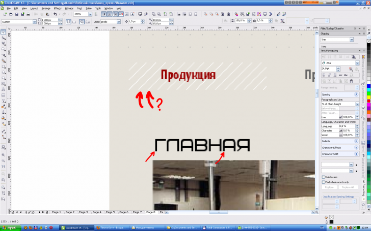

Как hatch fill и шрифт выровнять по пикселям?
Zigzain / 03.05.2011, 15:12/00:41
Форум:
Собственно проблема. Как hatch fill и шрифт выровнятьь по пикселям? В настройках заливки штрихами - проценты, как и в Character spacing. Второе - на примере шрифта Bicubik. Шрифт сам по себе хорошо выравнивается по пикселям, но выровнять всю часть слова не получается. использую докер Санчо Text formatting

Сетку, в данном случае, нужно делать с помощью калькулятора/мозга, бленда между двумя отрезками и поверклипа. А символы в надписи выравнивать инструментом Shape, если это сильно необходимо.
я делал сетку при помощи линий или в самых суровых случаях - пикселей, выстроенных в ряд. С выравниванием букв сложнее - приходится искать это соотношение. Жаль, что нельзя проценты сменить на поинты
У текста можно )
я про character spacing)
character spacing измеряется только в %, относительно отступов заданных каждому символу в файле шрифта.